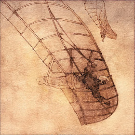

Muslims have contributed to modern civilization much more than most may think. They have made incredible breakthroughs in astronomy, science, and technology. For example, Muslim scholars tried calculating the earth's circumference, and they were only nine miles off from its correct value. Muslims also advanced irrigation, zoology, and they examined plants and animals in different regions and divided them into climate zones. One of the Muslims’ most significant advances was in mathematics. A Muslim scholar by the name of al-Khwarizmi (also known as “The Father of Algebra”) wrote a book on algebra, and when it was translated to Latin in the 12th century, it became the most important mathematics text in Europe. This book helped popularize Arabic Numerals in Europe, which we still use to this day. Muslims also spread the use of zero from India. This has importance because if the value of an equation is equal to nothing, there needs to be a way to show nothing, or zero. Also, zero can be used as a placeholder for place values with a value of zero. For example, 100 has no value in the tens and ones place, so we show that by writing a zero in those places.
The Muslims have learned from other ancient civilizations as well. Ancient civilizations including the ancient Egyptians, Greeks, and Mesopotamians. They also learned from the Persian’s after Khosrow I’s Golden Age of Iran (Known as Persia in the western world) started to crumble. They made improvements to their own work by looking at the achievements of ancient civilizations.
")
Muslim doctors established the world’s greatest hospitals at the time, and by the 10th century, most cities had one or two hospitals, and Baghdad, the capital of the Muslim world had five. Most hospitals were also used as teaching centers for trainee doctors. Medical care was as well as free since the government paid all medical expenses. Muslim doctors created different surgical tools. In the 10th century, a Muslim surgeon by the name of Qasim al Zahrawi (also known as "the Father of Modern Surgery") created surgical tools which included the scalpel, surgical scissors, and the surgical needle, all of which we still use today.
Believe it or not, Muslim Arabs invented the well-known drink we know today as coffee. Coffee beans were brought to Muslim Arabia through trade with the Ethiopians. The Muslims later developed coffee in present-day Yemen. Sufis used the drink to refrain from sleeping so they could stay awake for long nights of prayer.
Five centuries before the Renaissance, the Muslim inventor, Abbas ibn Firnas, designed a flying machine in the ninth century, long before Leonardo Da-Vinci created his own. The Muslims would also bring chess, one of the most popular board games of all time, to their lands and Europe.
The Muslim people have refined the work of ancient civilizations which has contributed immensely to modern society. From the spread of chess, to the calculation of the circumference of the Earth, Muslims have had an incredibly significant impact on modern civilization and the way we live today.